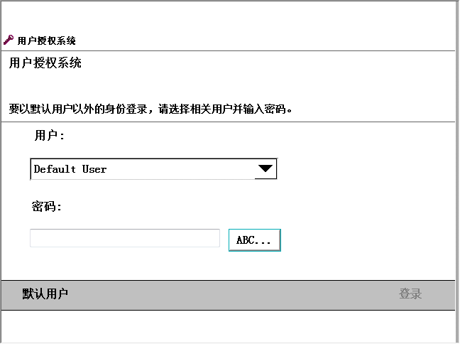

使用此过程注销系统。
操作
1
在 ABB 菜单上，点击注销。
2
点击 Yes（是）确认。
使用此过程登录到控制器（使用用户授权系统 UAS）。 UAS 可以限制用户可使用的功能。
注销之后，自动显示登录窗口。

Information
点击 User（用户）菜单并选择用户。
如果用户超过七个，该菜单将更换为按钮。
如果选择 Default User（默认用户），则无需密码，您将自动登录。
如果您选择的用户设置了密码，则必须使用软键盘输入密码。 点击 ABC...，显示软键盘。
输入密码后，点击确定。
3
点击 Login（登录）。
有关如何添加用户和设置授权的详情，请参阅操作员手册 - RobotStudio。
系统可以对特定用户隐藏某些视图或功能，有关设置详情请参阅 定义操作模式更改或启动时显示的视图 。